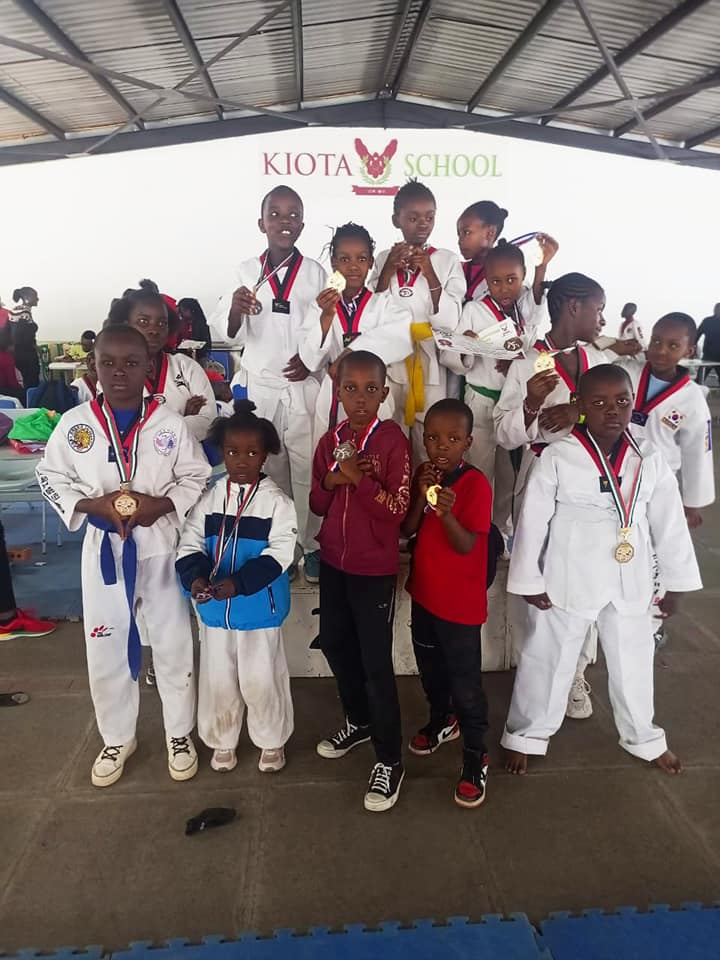
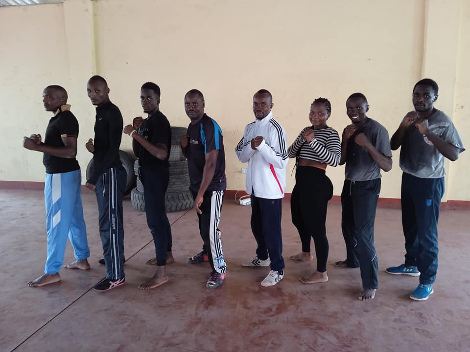

Competition & Trophies
Why Competition in Taekwondo is Important
Competition in Taekwondo is crucial for several reasons. Firstly, it provides practitioners with a platform to test their skills and techniques in a realistic and challenging setting. In the controlled environment of a competition, Taekwondo athletes can gauge their progress, identify strengths and weaknesses, and refine their abilities to become more effective martial artists.
Participation in Taekwondo competitions also fosters discipline and mental resilience. Athletes must train rigorously, maintain strict diets, and adhere to a structured schedule to prepare for contests. This dedication and mental fortitude developed through competition extends beyond the sport and can positively impact various aspects of life.
Benefits of Taekwondo Competition
1. Skill Improvement
Taekwondo competition challenges practitioners to elevate their skills continually. Facing different opponents with unique strategies encourages adaptability and innovation in techniques, ultimately leading to skill enhancement.
2. Character Development
Competing in Taekwondo cultivates essential life skills such as perseverance, respect, and sportsmanship. Athletes learn to win and lose with dignity, promoting good character on and off the mat.
3. Goal Achievement
Competitions provide clear goals for Taekwondo practitioners to work towards. Setting and achieving these goals boosts self-esteem and motivation, encouraging continued progress in the martial art.
Blockquote
Participating in Taekwondo competitions is not merely about winning medals; it's about personal growth and self-discovery. It's a journey that teaches athletes about their strengths, weaknesses, and the limitless potential within themselves.
Back to Basics
Competing in Taekwondo is a transformative experience.
While the athlete is victorious, it is still important to remember the key pillars of the Taekwondo discipline, which are:
- train hard
- stay focused
- remain humble
- persevere
- become a better version of yourself by inspiring others to follow the same path you are on.
Track Performance
Tournaments
- Kiota School Rongai.
- Sagittis adipiscing.
- Felis enim feugiat.
Competitions
- Dolor pulvinar etiam.
- Sagittis adipiscing.
- Felis enim feugiat.
Future Plans
Our Creative Roadmap
At Nitro Taekwondo Academy, we are committed to not only teaching martial arts but also making a positive impact on our community. Our creative roadmap outlines our future plans to stay relevant and achieve our goals:
1. Community Wellness Workshops
We plan to organize regular wellness workshops that go beyond martial arts. These workshops will cover topics such as mental health, nutrition, and stress management. By promoting holistic well-being, we aim to create healthier individuals and a stronger community.
2. Scholarships for Underprivileged Youth
Our academy is dedicated to providing opportunities to all. We will establish a scholarship program to support underprivileged youth in accessing Taekwondo training. This initiative will empower young talents and promote inclusivity.
3. Taekwondo for Special Needs
We believe in the transformative power of Taekwondo for individuals with special needs. We plan to create specialized classes and programs tailored to their unique requirements. This inclusive approach will promote physical fitness and boost confidence.
4. Community Self-Defense Seminars
Empowering our community with self-defense skills is a priority. We will organize free self-defense seminars open to the public. These seminars will enhance personal safety and contribute to community resilience.
5. Environmental Responsibility
We are committed to environmental stewardship. We plan to launch initiatives like "Clean the Community" campaigns and tree planting drives. By taking care of our environment, we aim to teach values of responsibility to our students and inspire eco-consciousness.
Join us on this exciting journey as we strive to make a lasting impact on individuals and the community. Together, we can create a healthier, safer, and more inclusive future.
Community Outreach Programs
Giving back to the community Projects
| Community-Based Projects | Description | Goals |
|---|---|---|
| Drug Rehabilitation Program | Provide rehabilitation services and support to individuals struggling with drug addiction within the community. | 1. Help individuals overcome addiction. 2. Reduce drug-related crime and issues. 3. Reintegrate recovered individuals into society. |
| Youth Sports Development | Organize sports programs and coaching for local youth, fostering physical fitness, teamwork, and discipline. | 1. Encourage a healthy and active lifestyle. 2. Develop leadership and sportsmanship. 3. Keep youth engaged in positive activities. |
| Community Garden Initiative | Create and maintain communal gardens to promote sustainable agriculture, food security, and a sense of community. | 1. Enhance access to fresh produce. 2. Educate about gardening and sustainability. 3. Strengthen community bonds. |
| Adult Literacy Classes | Offer literacy and adult education classes to empower individuals with essential life skills and knowledge. | 1. Improve literacy rates in the community. 2. Enhance employability and self-confidence. 3. Support lifelong learning. |
| Community Clean-Up Campaign | Organize regular clean-up drives to maintain a clean and healthy environment within the community. | 1. Beautify the neighborhood. 2. Promote environmental consciousness. 3. Encourage civic responsibility. |
| Total Impact | A stronger, healthier, and more connected community | |
Partnership/Sponsorship Programs
Working together with stake holders in the private and public sectors
| Partnerships/Sponsorship Programs | Description | Benefits |
|---|---|---|
| Scholarships for Needy Students | Provide financial support to underprivileged students, enabling them to access quality Taekwondo training. | 1. Empower disadvantaged youth. 2. Promote inclusivity. 3. Enhance the academy's reputation. |
| Student Exchange Programs | Facilitate cultural and educational exchanges between our students and those from partner academies worldwide. | 1. Expand horizons and cultural awareness. 2. Improve skills through exposure. 3. Forge international relationships. |
| Coach Exchange Programs | Exchange coaching expertise with partner academies to enhance coaching methods and knowledge. | 1. Share best practices. 2. Foster professional growth. 3. Elevate coaching standards. |
| Training/Office Facilities | Partner with organizations to provide state-of-the-art training facilities and office space for administrative purposes. | 1. Create a conducive training environment. 2. Improve administrative efficiency. 3. Ensure a well-equipped workspace. |
| Gym Equipment and Uniform | Collaborate with sponsors to provide high-quality gym equipment and uniforms for our athletes. | 1. Enhance athlete performance. 2. Promote a professional image. 3. Reduce financial burdens on athletes. |
| Transportation Facilitation | Partner with transportation companies to provide convenient and cost-effective travel solutions for our participants. | 1. Ensure accessibility to training and competitions. 2. Reduce travel-related expenses. 3. Improve logistical support. |
| Total Benefits | Enhanced community engagement and development in Taekwondo: Priceless | |
Stakeholders & Partners - potential investors
Sports Gallery
Token of sportsmanship

Equal focus on both Adults & Children
Moulding Young Minds - Participating in Taekwondo offers a multitude of benefits for individuals of all ages. For children, Taekwondo provides a structured and disciplined environment that fosters physical fitness, mental resilience, and character development. Through regular training and competition, youngsters learn valuable life skills such as self-control, respect for others, and goal-setting. Taekwondo also helps children build confidence and self-esteem, which are essential for their overall growth and success. Moreover, the competitive aspect of Taekwondo instills a sense of sportsmanship and teamwork from an early age, preparing them for various challenges in life.
Watering Minds Continuously - For adults, Taekwondo offers a holistic approach to fitness and well-being. It is an excellent way to stay physically active, improve flexibility, and develop self-defense skills. Beyond the physical aspects, Taekwondo helps adults reduce stress and enhance mental clarity through its focus on discipline and meditation techniques. The competitive nature of Taekwondo provides a platform for adults to set and achieve fitness goals, boosting their overall health. Furthermore, it fosters camaraderie and social connections among practitioners, creating a supportive community that encourages personal growth and lifelong learning. In summary, Taekwondo is a lifelong journey that benefits individuals of all ages, promoting physical fitness, mental resilience, and character development.